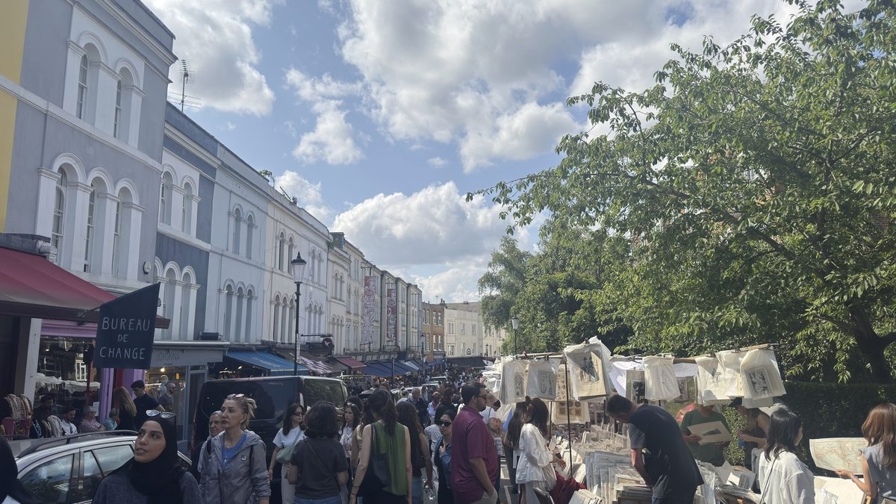
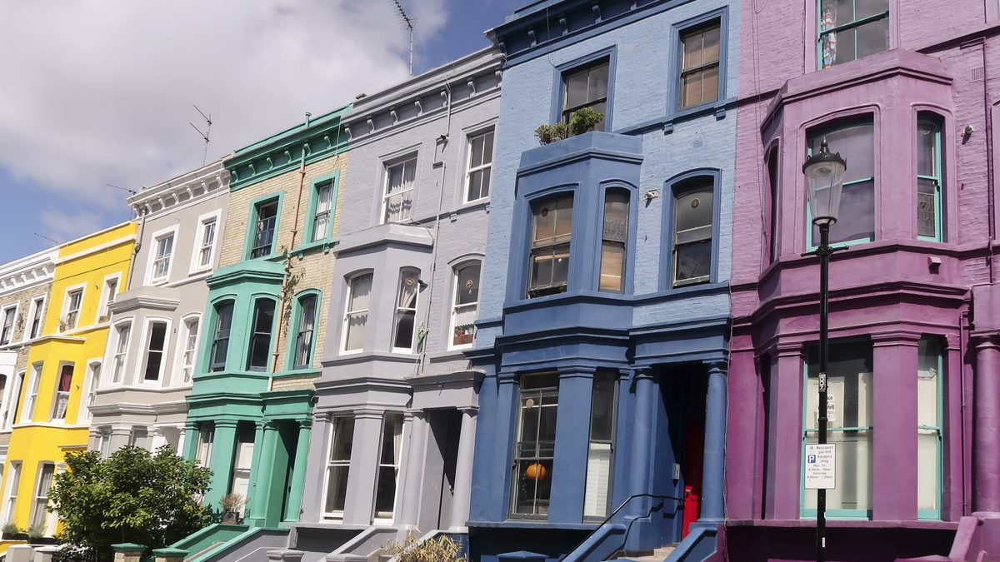
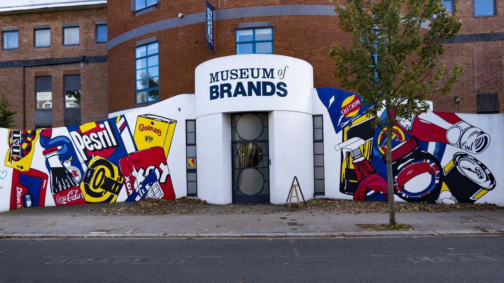
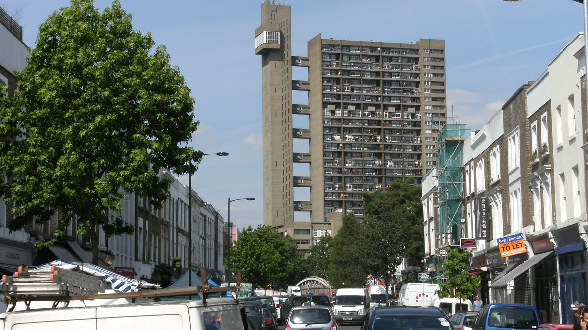
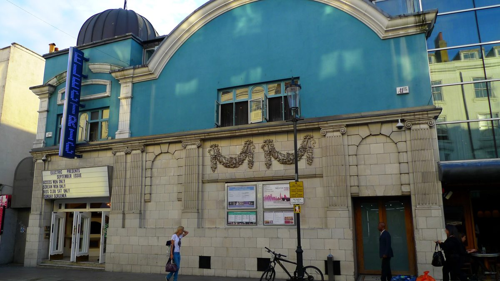

עודכן לאחרונה בספטמבר 2026
רוב האנשים מגיעים לנוטינג היל בגלל תמונה: בית ורוד, דלת כחולה, דוכן עתיקות מתחת לשמשייה. הבעיה היא שהתמונה לא מספרת באיזה יום צולמה, וזה בדיוק מה שקובע אם הביקור יצליח. בשבת פורטובלו רואד הוא שוק העתיקות הגדול בעיר, בשישי הוא רחוב וינטג׳ ואוכל, בחמישי הוא נסגר באחת, וביום ראשון הוא רחוב רגיל. מי שיודע את זה מקבל בחצי יום את כל מה שיש כאן, מהתחנה בדרום ועד מגדל טרליק בצפון, בלי לחזור על עקבותיו. זה המדריך לזה.
בחרו כיוון ותראו כאן את המקומות עצמם, עם מה שכדאי לדעת לפני שהולכים.
מה זה נוטינג היל, ולמה היום בשבוע קובע הכל

נוטינג היל היא הגבעה שממערב לגני קנזינגטון, ופורטובלו רואד הוא הרחוב שחוצה אותה מדרום לצפון. השם הגיע מחווה שנקראה על שם ניצחון ימי בריטי בפורטו בלו שבפנמה, ב-1739, והרחוב עצמו היה שביל כפרי אל החווה עד שהעיר בלעה אותו באמצע המאה התשע עשרה. הבתים המפוארים בקרסנטים, הרחובות המעוקלים סביב הגבעה, נבנו אז לעשירים, ובמשך מאה שנה השכונה ירדה מנכסיה: בשנות החמישים היא הייתה מהאזורים העניים והצפופים במערב לונדון, ובה התיישבו המהגרים מהאיים הקריביים שהביאו איתם את הקרנבל. הצבעים על הבתים הגיעו בשנות השישים והשבעים, כשאמנים וסטודנטים קנו בזול את הבתים המתפוררים וצבעו אותם כמו שרצו. ואז הגיעו הכסף, ואחריו הסרט מ-1999, ומאז זו אחת השכונות היקרות בעיר, שנראית עדיין כמו שכונה שמישהו צבע בידיים.
השוק הוא הסיפור השני. דוכני פירות וירקות עומדים בפורטובלו רואד מאז שנות השישים של המאה התשע עשרה, וסוחרי העתיקות הצטרפו אחרי מלחמת העולם השנייה, כשהשוק הישן של קלדוניאן רואד נסגר והם חיפשו רחוב חדש. היום זה שוק אחד באורך של יותר מקילומטר, שמחולק למקטעים, וכל מקטע פועל בימים שונים. זו הסיבה שמי שמגיע ביום שלישי ומצפה לעתיקות רואה דוכני אבוקדו, ומי שמגיע ביום ראשון רואה רחוב ריק.
מה שזה אומר לכם בפועל: זה אזור של רחוב אחד וכיוון אחד. מתחילים בתחנת Notting Hill Gate בדרום, הולכים צפונה לאורך השוק, סוטים לרחובות הצבעוניים באמצע הדרך, ומסיימים בגולבורן רואד בצפון. חצי יום, בלי נסיעה בין העצירות, ובשבת הכל פתוח.
למי האזור הזה מתאים, ולמי פחות
השוק, הבתים הצבעוניים והדלת הכחולה הם לונדון של הסרטים, וזה הבוקר שרוב האנשים מצלמים בו הכי הרבה. שבת בבוקר, ואז ממשיכים לקנזינגטון.
קרסנטים צבעוניים, חנויות עתיקות עם חלונות ראווה מהמאה הקודמת, ובית קפה בכל פינה. בוקר יום חול, כשהרחובות ריקים, הוא הזמן הנכון.
הארקדות המקורות של דרום פורטובלו בשבת, דוכני הבגדים מתחת לווסטוויי בשישי ובשבת, ורהיטים ישנים בגולבורן. זה השוק לזה בלונדון.
מוזיאון המותגים עם הצעצועים של כל עשור, הדוכנים והמוזיקה ברחוב, ומגרש המשחקים של הולנד פארק במרחק רבע שעה. עם עגלה, לא בשבת בצהריים.
ולמי זה פחות מתאים. מי שמגיע ביום ראשון, שני או שלישי ומצפה לשוק שראה בתמונות יתאכזב, כי בימים האלה זה רחוב עם כמה דוכני ירקות. מי ששונא צפיפות צריך לדעת ששבת בצהריים בפורטובלו היא מהמקומות הצפופים בלונדון, ושהפתרון הוא להגיע בתשע. ומי שמחפש מוזיאונים גדולים או אתרים מלכותיים לא ימצא אותם כאן, הם במרחק רבע שעה בקנזינגטון, ולכן שני האזורים משלימים זה את זה ביום אחד.
🛍️ שוק פורטובלו, יום אחר יום ומקטע אחר מקטע
הטעות הנפוצה היא לחשוב על פורטובלו כעל שוק אחד. בפועל זה רחוב באורך של יותר מקילומטר עם ארבעה מקטעים, מדרום לצפון, ולכל אחד ימים משלו. הטבלה הזאת היא הדבר החשוב ביותר במדריך. במתכנן כל הרחוב יושב ברשומה אחת, נוטינג היל ושוק פורטובלו רוד, שנכנסת למסלול בלחיצה.
| מקטע ומה יש בו | מתי | עלות |
|---|---|---|
| עתיקות, הקצה הדרומי. דוכנים ברחוב וארקדות מקורות בין צ׳פסטו וילאס לאלגין קרסנט | שבת בלבד, מבערך שבע בבוקר עד ארבע | חינם |
| פירות, ירקות ודוכני מזון, המקטע המרכזי, עם דוכני אוכל חם בשבת | שני עד שבת, בחמישי עד אחת בצהריים | חינם |
| וינטג׳ ויד שנייה, בין לנקסטר רואד לגשר הווסטוויי | שישי ושבת | חינם |
| אוכל רחוב ודוכנים מתחת לגשר ומצפון לו, וגולבורן רואד בהמשך | שישי ושבת | חינם |
| יום ראשון | אין שוק, חוץ מימי ראשון מיוחדים בקיץ שהמועצה מכריזה עליהם | |
| מוזיאון המותגים, בלנקסטר רואד | שני עד שבת מעשר עד חמש, ראשון מאחת עשרה | בתשלום |
| קולנוע האלקטריק, סרט בכורסה | כל יום, בהזמנה מראש | בתשלום |
איפה מה לאורך הרחוב
מתחנת Notting Hill Gate הולכים חמש דקות בפמברידג׳ רואד, ופורטובלו רואד מתחיל בשקט, עם בתים לבנים ופסטליים ובלי דוכנים. אחרי צ׳פסטו וילאס מתחילות העתיקות: דוכנים ברחוב, וחשוב מזה, ארקדות, מעברים מקורים בין הבתים שבכל אחד מהם עשרות סוחרים קטנים עם ויטרינות של שעונים, כלי כסף, מפות ותכשיטים. הן פתוחות בשבת בלבד, ובגשם הן המקום. אחרי אלגין קרסנט הרחוב הופך לשוק ירקות ואוכל, עם החנויות המפורסמות של השכונה משני הצדדים, וזה המקטע שפועל כל השבוע. אחרי לנקסטר רואד מתחיל הווינטג׳, דוכני בגדים ותיקים שנמשכים עד מתחת לגשר הכביש המהיר, הווסטוויי, ושם, מתחת לחופה, יש בשישי ובשבת שוק של אוכל, ספרים ומוזיקה. ומעבר לגשר ממשיכים עוד עשר דקות לגולבורן רואד.
עתיקות: מה קונים, ואיך
הכלל הראשון של שבת בפורטובלו הוא השעה. הסוחרים המקצועיים קונים בין שבע לתשע בבוקר, ואחרי עשר הרחוב מתמלא בקהל שבא לצלם. מי שרוצה באמת לחפש משהו מגיע בתשע, ומי שרוצה את האווירה מגיע באחת עשרה. הדברים שמוצאים כאן בכמויות: מצלמות ישנות, כלי כסף, תכשיטים ויקטוריאניים, מפות ותחריטים, פוסטרים וכלי חרסינה. מתמקחים בנימוס, בערך עשרה אחוזים, ומשלמים לרוב בכרטיס, אבל בדוכני הרחוב הקטנים מזומן עדיין עוזר. מי שלא קונה כלום לא הפסיד, כי חלונות הראווה של הארקדות הם תערוכה בפני עצמה. מדריך השווקים משווה בין פורטובלו לשאר שווקי העיר, ומסביר לאיזה שוק הולכים לאוכל ולאיזה לעתיקות.
🌈 הרחובות הצבעוניים, ואיך מצלמים אותם בכבוד

הרחובות הצבעוניים של נוטינג היל נמצאים ממערב לפורטובלו רואד, בין השוק לתחנת Ladbroke Grove, ואפשר לעבור את כולם בלולאה של חצי שעה. מתחילים בפינת לנקסטר רואד ופורטובלו, שם עומדת שורה שלמה של בתים בצהוב, בכחול, בטורקיז ובוורוד, והולכים מערבה לאורך הרחוב. משם פונים דרומה חזרה דרך אלגין קרסנט, שהוא רחוב מעוקל של בתים גבוהים בפסטלים רכים יותר, וחוזרים לשוק דרך בלנהיים קרסנט, שבו עומדת חנות הספרים שהסרט נוטינג היל בנה סביבה את הסיפור. הדלת הכחולה מהסרט נמצאת בווסטבורן פארק רואד, שתי דקות צפונה מלנקסטר רואד, והיא דלת של בית שגרים בו: מסתכלים, מצלמים מהמדרכה, וממשיכים.
וכאן צריך לומר משהו בכנות. הבתים הצבעוניים הם לא אטרקציה, הם בתים. האנשים שגרים בהם רואים כל שבת מאות אנשים שמצטלמים על המדרגות שלהם, נשענים על השערים, נכנסים לחצרות הקדמיות ומצלמים דרך החלונות, וחלק מהתושבים כבר ביקשו בשלטים ובעיתונות שיפסיקו. אנחנו מבקשים את אותו הדבר: מצלמים מהמדרכה הציבורית, לא נכנסים לחצר ולא עולים על מדרגות הכניסה, לא מצלמים אנשים בחלונות ובדלתות, ומדברים בשקט, כי זה רחוב מגורים ולא שוק. מי שמכבד את זה מקבל בדיוק את אותה תמונה, ובלי לפגוע באף אחד. הזמן הנכון הוא בוקר יום חול, כשהרחובות ריקים והאור נמוך, ובשבת אחר הצהריים פשוט לא עוצרים בהם.
🏷️ מוזיאון המותגים, העצירה המקורה של השכונה

מוזיאון המותגים הוא המקום שמצדיק את הסטייה מהשוק. בקצה המערבי של לנקסטר רואד, מול תחנת Ladbroke Grove כמעט, יושב אוסף פרטי של יותר ממאה שנות אריזות, פרסומות, צעצועים, מגזינים ומוצרי צריכה, מסודר כמנהרת זמן: מתחילים בעידן הוויקטוריאני, עוברים דרך שתי מלחמות העולם, שנות החמישים, השישים והשבעים, ומסיימים בשנות התשעים והאלפיים. ההנאה כאן היא הזיהוי. מי שגדל בשנות השמונים מוצא את הצעצועים שלו על המדף, מי שביקר בלונדון לפני עשרים שנה מוצא את השוקולדים שקנה אז, וילדים מגלים שההורים שלהם היו פעם ילדים. יש גם גינה קטנה ובית קפה, ובקצה תערוכה מתחלפת.
נכון לספטמבר 2026 כרטיס מבוגר עולה 14 ליש״ט, ילדים בגילים 7 עד 16 ב-8, מתחת לגיל 6 חינם, וכרטיס משפחתי לשני מבוגרים ושני ילדים 36. הכרטיס תקף לשנה שלמה, כולל התערוכות המתחלפות. פתוח שני עד שבת מעשר עד חמש, וביום ראשון מאחת עשרה עד חמש. קונים בכניסה או באתר, בלי מזומן, רק בכרטיס, ולתערוכות פופולריות מבקשים לפעמים להזמין חלון זמן חינמי מראש. ביקור ממוצע אורך שעה עד שעה וחצי. לחיצה על שם המוזיאון בטקסט מציגה את המחיר המעודכן ביותר שיש לנו. ביום גשום זו העצירה הראשונה, לא האחרונה, והמדריך ליום גשום מסביר מה עושים בשאר העיר.
🥐 גולבורן רואד ומגדל טרליק, החלק שרוב התיירים מפספסים

מעבר לגשר הווסטוויי רוב המבקרים מסתובבים וחוזרים, וזו הטעות. עוד עשר דקות צפונה, פורטובלו רואד פוגש את גולבורן רואד, והרחוב הזה הוא הצד השני של נוטינג היל: השכונתי, הפחות מלוטש, והטעים. כאן חיות הקהילות המרוקאית והפורטוגלית הגדולות בלונדון, ואת זה רואים בחלונות. מאפייה פורטוגלית עם פשטידות השמנת, פשטייש דה נאטה, שלונדונים נוסעים בשבילן מכל העיר, בתי קפה עם תה נענע וגריל דגים על המדרכה, וחנויות רהיטים ישנים. בשישי ובשבת הרחוב מתמלא בדוכנים של יד שנייה: כיסאות, מראות, מנורות, ספרים וכלי בית, במחירים שפורטובלו כבר שכחה. בשאר השבוע זה רחוב רגיל ונעים, בלי דוכנים, ואז לא נוסעים לכאן במיוחד.
מעל הכל עומד מגדל טרליק, גורד שחקים של בטון חשוף מ-1972 בן שלושים ואחת קומות, עם מגדל המעליות הנפרד שמחובר לבניין בגשרים. האדריכל ארנו גולדפינגר תכנן אותו כדיור ציבורי, הלונדונים שנאו אותו במשך עשרים שנה, ומאז 1998 הוא בניין מוגן שהפך לסמל של השכונה ולדירות מבוקשות. זה בניין מגורים, ומסתכלים עליו מהרחוב, אבל מה שנמצא לרגליו הוא הסיום היפה של חצי היום: גני מינווייל, גינה קהילתית קטנה על גדת תעלת גרנד יוניון, שממנה ממשיכים לאורך המים מזרחה מי שרוצה להגיע ברגל לונציה הקטנה, בערך ארבעים דקות.
🎬 קולנוע האלקטריק, וערב בשכונה

באמצע השוק, בין דוכני הירקות והווינטג׳, עומד בניין טורקיז עם שלט ניאון: האלקטריק, בית הקולנוע של פורטובלו, מבתי הקולנוע הוותיקים בבריטניה, שנפתח ב-1910 ומקרין עד היום. מה שמייחד אותו הוא לא הסרטים, שהם הסרטים החדשים של השבוע, אלא האולם: כורסאות עור עם שרפרף לרגליים ושמיכה, ספות זוגיות בשורה האחורית, ומיטות זוגיות ממש בשורה הראשונה, ובר שמגישים ממנו לכיסא. זו לא אטרקציה שנכנסים אליה לחצי שעה, אלא דרך לונדונית לסיים את היום או להעביר אחר צהריים גשום בשכונה, ולכן היא במדריך כאפשרות ולא כעצירה חובה.
נכון לספטמבר 2026 כורסה ביום חול לפני חמש עולה 15 ליש״ט, בערבים ובסופי שבוע 20 עד 25, ספה או מיטה זוגית 30 עד 50 לשני אנשים, וילדים עד גיל 14 ב-10. מזמינים מראש באתר, כי בסוף השבוע הכורסאות נגמרות, וקונים את הפופקורן בפנים. מי שרוצה ערב שלם בשכונה אוכל לפני כן באחת הסמטאות סביב השוק, שבשש בערב כבר ריקות מדוכנים ומלאות בשולחנות של מסעדות. למחזמר או הצגה נוסעים חזרה למרכז, כאן זה קולנוע.
👨👩👧 נוטינג היל עם ילדים
זה לא האזור הראשון שנבחר לילדים בלונדון, אבל עם ילדים מגיל שבע הוא עובד, בתנאי שמגיעים מוקדם ומשלבים אותו עם פארק.
- מוזיאון המותגים. העצירה שנבנתה בשבילם: מדף צעצועים לכל עשור, ומשחק של "מה מזה היה לכם", שגם סבא וסבתא משתתפים בו. שעה, ואז יוצאים לשוק.
- השוק בתשע בבוקר. הדוכנים נפתחים, הנגנים מתחילים, ועדיין אפשר ללכת עם עגלה. מאחת עשרה בשבת הרחוב צפוף מדי לילדים קטנים, ואז עדיף בוקר יום שישי, עם הווינטג׳ והאוכל ובלי ההמונים.
- דוכני האוכל מתחת לווסטוויי. בשישי ובשבת, צהריים בעמידה עם משהו מכל דוכן, ובלי לחכות לשולחן.
- הולנד פארק. רבע שעה הליכה דרומה מתחנת Notting Hill Gate: מגרש הרפתקאות, טווסים שמסתובבים חופשי וגן קיוטו עם דגי הקוי. מדריך קנזינגטון מפרט אותו, כי הוא שייך לשני האזורים.
- מגרש המשחקים של דיאנה. בקצה הצפוני של גני קנזינגטון, עשר דקות מזרחה מהתחנה לאורך בייזווטר רואד: ספינת פיראטים בגודל אמיתי, חול ומסלולי טיפוס, בחינם. מדריך הפארקים לילדים מסביר מתי הוא מתמלא.
🌧️ אם יורד גשם
נוטינג היל בגשם היא סיפור של שבת ושל שאר השבוע. בשבת יש לאן לברוח: ארקדות העתיקות בדרום פורטובלו הן מעברים מקורים שאפשר לבלות בהם שעה, החופה מתחת לווסטוויי מכסה את דוכני האוכל, ומוזיאון המותגים במרחק חמש דקות. בשאר השבוע נשארים המוזיאון והאלקטריק, וזה מספיק לאחר צהריים אחד, אבל לא לבוקר שלם, ואז עדיף להחליף את היום עם המוזיאונים של קנזינגטון, שהם התשובה הטובה ביותר של לונדון לגשם. המדריך ליום גשום מסדר את כל האפשרויות בעיר, והגרסה למשפחות מוסיפה את הילדים.
🚶 חצי יום מושלם, מוכן להליכה
המסלול הזה הולך מדרום לצפון, מהתחנה למגדל, בגלל השוק: כך פוגשים את העתיקות בבוקר כשהן בשיאן, את הווינטג׳ והאוכל בצהריים, ואת גולבורן רואד כשהדוכנים שם עדיין עומדים. הרחובות הצבעוניים נכנסים בהתחלה, לפני שהקהל מגיע אליהם, וכל ההליכה יחד היא בערך שני קילומטרים, בכיוון אחד, בלי נסיעה.
זה חצי יום, בערך ארבע שעות עם צהריים, ואנחנו לא מנסים למתוח אותו. מי שרוצה יום שלם ממשיך אחר הצהריים להולנד פארק ולקנזינגטון, שהם רבע שעה דרומה, או הולך מגולבורן לאורך התעלה לונציה הקטנה. שתי התוספות האלה מופיעות למטה, ולא במסלול עצמו.
חצי יום בנוי מראש שמתחיל ברחובות הצבעוניים ונגמר בפשטידת שמנת מול מגדל טרליק. לחיצה אחת מכניסה את כולו למסלול שלכם, ומשם אפשר לגרור, להחליף ולהוסיף ימים.
חצי היום נוסף למסלול שלכם ואפשר להמשיך לגלוש. אם כבר בניתם מסלול קודם, הוא לא יימחק. המסלול מתחיל בתחנת Notting Hill Gate, שהיא נקודת ההגעה ולא עצירה.
- 09:45הרחובות הצבעונייםמתחנת Notting Hill Gate עולים בפמברידג׳ רואד ובקנזינגטון פארק רואד עד אלגין קרסנט. הלולאה: אלגין קרסנט, לנקסטר רואד, ובחזרה לשוק. מהמדרכה, בשקט
- 10:30שוק פורטובלונכנסים לרחוב בלנקסטר רואד, יורדים דרומה לארקדות העתיקות, ואז חוזרים צפונה דרך הירקות והווינטג׳ עד מתחת לווסטוויי
- 12:30מוזיאון המותגיםחמש דקות מערבה בלנקסטר רואד. בתשלום, שעה עד שעה וחצי, ותו כניסה שתקף לשנה
- 13:45גולבורן רואד ומגדל טרליקחוזרים לפורטובלו, עוברים מתחת לווסטוויי וממשיכים עשר דקות צפונה. צהריים בדוכנים או במאפייה הפורטוגלית, והמגדל בסוף הרחוב
פירוט מלא של חצי היום, שעה אחר שעה
| שעה | איפה | מה עושים |
|---|---|---|
| 09:45 | הרחובות הצבעוניים | מתחנת Notting Hill Gate יוצאים לפמברידג׳ רואד, ואחרי הפינה של פורטובלו ממשיכים בקנזינגטון פארק רואד, הרחוב השקט המקביל, עד אלגין קרסנט. הולכים בקרסנט מערבה, פונים ללנקסטר רואד, וחוזרים מזרחה עד פורטובלו. חצי שעה, מהמדרכה, בלי להיכנס לחצרות. |
| 10:30 | שוק פורטובלו | מלנקסטר רואד יורדים דרומה בשוק עד צ׳פסטו וילאס, דרך הארקדות המקורות של העתיקות, ואז מסתובבים וחוזרים צפונה: דוכני הירקות והאוכל, החנויות, האלקטריק בדרך, הווינטג׳ אחרי לנקסטר רואד, ומתחת לווסטוויי. שעתיים, ואפשר לקצר. |
| 12:30 | מוזיאון המותגים | מפורטובלו הולכים מערבה בלנקסטר רואד עד הקצה, חמש דקות. מנהרת הזמן של האריזות, מדפי הצעצועים, וקפה בגינה. ביום גשום מקדימים אותו לתחילת היום. |
| 13:45 | גולבורן רואד | חוזרים לפורטובלו, עוברים מתחת לגשר הווסטוויי וממשיכים צפונה עד הפינה של גולבורן רואד. דוכני היד השנייה, המאפייה הפורטוגלית ובתי הקפה המרוקאיים, ומגדל טרליק בקצה. מסיימים בגני מינווייל על התעלה, ומשם לתחנת Westbourne Park, שבע דקות. |
חלופות ותוספות
- ביום שישי אותו מסלול בלי הארקדות, שסגורות, ועם פחות קהל. ביום חול אחר מתחילים ברחובות, ממשיכים למוזיאון ומדלגים על גולבורן, שבלי הדוכנים לא שווה את ההליכה.
- קצר יותר, שעתיים: הרחובות הצבעוניים והשוק, בלי המוזיאון ובלי הצפון. מסתיימים מתחת לווסטוויי וחוזרים לתחנת Ladbroke Grove.
- הגרסה ליום גשום, בקישור שמעל: הארקדות, המוזיאון, וסרט באלקטריק אחר הצהריים.
- להמשיך להולנד פארק ולקנזינגטון: אחרי המוזיאון חוזרים לתחנת Notting Hill Gate ויורדים רבע שעה דרומה לפארק, ומשם מדריך קנזינגטון ממשיך למוזיאונים ולהרודס. ככה זה הופך ליום שלם.
- להמשיך לונציה הקטנה: מגני מינווייל ליד מגדל טרליק הולכים לאורך תעלת גרנד יוניון מזרחה, כארבעים דקות שטוחות על המים, עד סירות הבתים. מדריך הפינות הנסתרות מסביר מה יש שם.
🚇 איך מגיעים, ואיזו תחנה לאיזה חלק
נוטינג היל יושבת על הגבול בין אזורי תחבורה 1 ו-2, ושלוש תחנות משרתות אותה. הבחירה ביניהן קובעת לאיזה כיוון הולכים את השוק, ולכן היא לא עניין של נוחות אלא של תכנון.
- Notting Hill Gate, להתחלה. קו סנטרל האדום, וקווי סירקל ודיסטריקט. חמש דקות הליכה לתחילת פורטובלו רואד, ומכאן הולכים את השוק מדרום לצפון, כמו שצריך. שתי תחנות מ-Oxford Circus, ארבע מ-Bond Street, וזו התחנה שגם מובילה דרומה להולנד פארק ומזרחה לגני קנזינגטון.
- Ladbroke Grove, לאמצע. קווי סירקל והמרסמית׳ אנד סיטי. יוצאים ממש ליד מוזיאון המותגים ובמרחק שלוש דקות מהווינטג׳ שמתחת לווסטוויי. התחנה למי שמגיע רק למוזיאון או לחלק הצפוני, ולא נגישה לעגלות.
- Westbourne Park, לסיום. אותם קווים, תחנה אחת צפונה. שבע דקות מגולבורן רואד, וזו התחנה שממנה חוזרים למרכז בסוף חצי היום, או ממשיכים ל-Paddington ולקו אליזבת.
- Holland Park, לתוספת. קו סנטרל, תחנה אחת מערבה מ-Notting Hill Gate, ממש בכניסה לפארק.
באוטובוס, קו 52 נוסע מנייטסברידג׳ ומקנזינגטון דרך Notting Hill Gate ולאורך לדברוק גרוב, ועובר ליד המוזיאון וליד גולבורן רואד, וזו הדרך הנוחה לחבר את נוטינג היל עם קנזינגטון בלי לרדת לתחתית. המדריך לקווי התחתית מסביר איזה קו עושה מה, ומדריך התחבורה מסביר את תקרות התשלום.
מה משלבים עם נוטינג היל באותו יום
- קנזינגטון והמוזיאונים, אחר הצהריים. רבע שעה הליכה מ-Notting Hill Gate דרך הולנד פארק, או אוטובוס 52. מדריך קנזינגטון בנוי בדיוק לחצי יום כזה.
- הולנד פארק וגן קיוטו, לצהריים שקטים אחרי השוק, במיוחד עם ילדים.
- גני קנזינגטון, מהתחנה מזרחה לאורך בייזווטר רואד: מגרש המשחקים של דיאנה, פסל פיטר פן והארמון מהצד הצפוני. מדריך הפארקים מסביר את הגנים.
- ונציה הקטנה, ברגל לאורך התעלה מגולבורן, או בתחתית ל-Warwick Avenue.
🔗 איך נוטינג היל משתלבת בטיול שלכם
הכלל שלנו: נוטינג היל נכנסת לטיול לפי היומן. אם יש לכם שבת בלונדון, זה הבוקר של השבת, ואחריו קנזינגטון או הייד פארק. אם אין שבת, זה בוקר יום שישי. ואם הביקור נופל על ראשון עד רביעי, מסתפקים ברחובות הצבעוניים ובמוזיאון, שעה וחצי, בדרך לקנזינגטון.
- בטיול של שלושה ימים, נוטינג היל נכנסת רק אם אחד הימים הוא שבת, ואז כבוקר לפני קנזינגטון. מסלול שלושת הימים מסביר מה מוותרים עליו.
- בטיול של חמישה ימים, היא אחר הצהריים של יום המוזיאונים, אחרי מוזיאון הטבע והייד פארק. מסלול חמשת הימים בנוי ככה, ומי שהיום הזה נופל לו על שבת הופך את הסדר ומתחיל כאן.
- בטיול של שבעה ימים, יש לה את הבוקר של יום המערב, עם הפארקים והמוזיאונים אחר הצהריים. מסלול שבעת הימים נותן לה את הזמן.
- אם אתם לנים במערב העיר, השוק הופך למקום שעוברים בו בבוקר בדרך לתחנה, וזה שווה יותר מכל כרטיס. מדריך הלינה בקנזינגטון מסביר למי זה מתאים.
שאלות שחוזרות על עצמן
כמה זמן צריך בנוטינג היל?
חצי יום, בערך שלוש עד ארבע שעות: הרחובות הצבעוניים, ההליכה לאורך שוק פורטובלו, מוזיאון המותגים וצהריים בגולבורן רואד. זה לא אזור של יום שלם, ומי שרוצה יום מלא מוסיף אחר הצהריים את הולנד פארק, את קנזינגטון או את ונציה הקטנה.
באיזה יום כדאי להגיע לשוק פורטובלו?
שבת, כי שוק העתיקות פועל בשבת בלבד, ואיתו גם דוכני הווינטג׳ מתחת לווסטוויי וגולבורן רואד. שישי הוא הגרסה הרגועה, בלי העתיקות אבל עם הווינטג׳ והאוכל. בשני עד רביעי יש בעיקר דוכני פירות וירקות, בחמישי השוק נסגר באחת, וביום ראשון אין שוק כלל, חוץ מימי ראשון מיוחדים בקיץ.
כמה עולה חצי יום בנוטינג היל?
השוק, הרחובות הצבעוניים וגולבורן רואד חינם. בתשלום רק מוזיאון המותגים, נכון לספטמבר 2026 מבוגר 14 ליש״ט וילדים בגילים 7 עד 16 ב-8, מתחת לגיל 6 חינם, וכרטיס לסרט באלקטריק, מ-15 ליש״ט ביום חול לפני חמש.
האם נוטינג היל מתאימה לילדים?
לילדים מגיל שבע כן: מוזיאון המותגים עם מדפי הצעצועים של כל עשור, הדוכנים והמוזיקה ברחוב, ומגרש המשחקים של הולנד פארק במרחק רבע שעה. עם עגלה בשבת בצהריים הרחוב צפוף מדי, ואז עדיף בוקר יום שישי.
צילומים במדריך הזה מוויקישיתוף, ברישיונות קריאייטיב קומונס: שוק פורטובלו Bex Walton, CC BY 4.0; לנקסטר רואד Bex Walton, CC BY 2.0; מוזיאון המותגים Simon, CC BY 2.0; גולבורן רואד Mark Ahsmann, CC BY-SA 3.0; קולנוע האלקטריק Ewan Munro, CC BY-SA 2.0. התמונות נחתכו לרוחב העמוד.